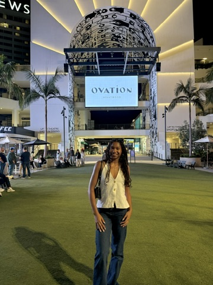

Learn more about me and my interests in technology.

Hi y'all, my name is Qamryn! I am a senior studying Information Science with a certificate Leadership. I am on the Wisconsin Cheerleading team so that takes up the majority of my time outside of school. I'm also in Alpha Kappa Alpha Sorority, Inc. and currently serve as the President of the National Pan-Hellenic Council on campus. I took this class because I am aware of the issue of the lack of representation or the misrepresentation of diverse human groups in computer sciences, but I wanted to learn more about how those issues are becoming more important today, how to work to overcome that, aside from the obvious answer of just increasing diversity in this field, and I want to confront my own assumptions as well. My favorite 'tech' thing right now is learning about Big Data and AI – it's ethicality, it's environmental impact, it's incorporation into our daily lives, non-tecnology industries, and how it is changing human thinking and behavior